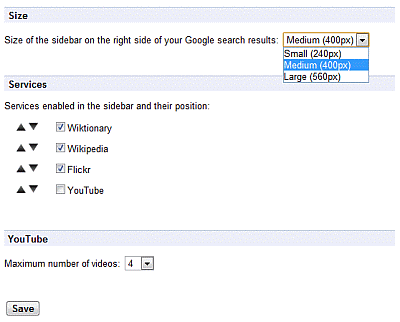

Welcome to version 1.3.5 of this Google Search Sidebar extension, the Google Chrome extension adding a sidebar to any Google search with results from Wiktionary (dictionary), Wikipedia, Flickr and YouTube.
The latest version 1.3.5 has a new way to match the pages where the sidebar should be added and is now excluding several sections of the Google site (such as Shopping, News, Realtime) from getting the sidebar being displayed as some display conflicts were reported.
From the options page, you can enable/disable the services in the sidebar as well as set their positions to suit your taste. For YouTube, an option allows you to set the maximum number of videos you want to see.

With Google Instant, the sidebar is updated only when the ENTER key is pressed to run a search. It works for me, please ping me if it doesn't for you.
For any issue, question, idea, request for enhancements, please add a comment on the extension's page or drop me a note via Twitter.
And if you like this extension, please don't be shy and tell the world!

The code for this extension is licensed under MIT license, and historically based on: